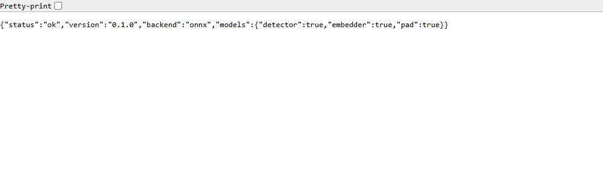
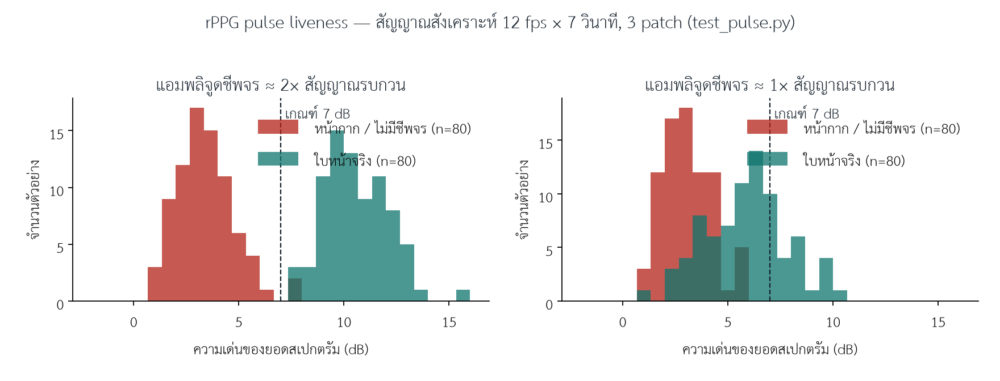

โครงการ eKYC · เอกสารทางเทคนิค
ระบบยืนยันตัวตนด้วยใบหน้าแบบ client–server
พร้อมชั้นป้องกันการปลอมแปลงและหน้ากาก 3 มิติ
eKYC Server — โทรศัพท์เก็บหลักฐาน เซิร์ฟเวอร์ตัดสิน · ทดสอบบน Railway
สารบัญ
- 1. บทนำและวัตถุประสงค์
- 2. สถาปัตยกรรม
- 3. ชั้นป้องกันและภัยคุกคามที่รับมือ
- 3.1 ชั้นเดิม
- 3.2 ชั้นที่เพิ่มสำหรับหน้ากาก 3 มิติ / ซิลิโคน
- 4. การติดตั้งบน Railway
- 5. ส่วนต่อประสาน (API)
- 6. การทดสอบและรูปอ้างอิง
- 6.1 การทดสอบอัตโนมัติ
- 6.2 การตรวจสอบเซิร์ฟเวอร์ที่ติดตั้งจริง
- 6.3 การปรับเทียบ rPPG บนสัญญาณสังเคราะห์
- 6.4 หน้าจอของแอปตัวอย่าง
- 7. การประเมินตามตัวชี้วัด ISO/IEC 30107-3
- 8. การใช้งานแอปตัวอย่างกับเซิร์ฟเวอร์ทดสอบ
- 9. ข้อจำกัดและแผนงานถัดไป
- ภาคผนวก ก. รหัสเหตุผลจากเซิร์ฟเวอร์
- ภาคผนวก ข. ตัวแปรสภาพแวดล้อมที่สำคัญ
1. บทนำและวัตถุประสงค์
ระบบ eKYC Server เป็นระบบยืนยันตัวตนด้วยใบหน้าที่แบ่งหน้าที่ชัดเจน: โทรศัพท์ ทำหน้าที่โค้ชผู้ใช้ เก็บหลักฐาน (ภาพนิ่งต่อคำสั่ง ภาพช่วง flash สี และภาพต่อเนื่องช่วงวัดชีพจร) และส่งขึ้นเซิร์ฟเวอร์ ส่วน เซิร์ฟเวอร์ เป็นผู้ตัดสินแต่เพียงผู้เดียว โดยวัดทุกอย่างซ้ำจากพิกเซล ไม่เชื่อค่าใด ๆ ที่โทรศัพท์รายงาน เพราะอุปกรณ์อยู่ในมือของผู้ที่อาจเป็นผู้โจมตี
เอกสารฉบับนี้ครอบคลุมงานรอบวันที่ 18 สิงหาคม 2569 ซึ่งเพิ่ม (1) ชั้นป้องกันหน้ากาก 3 มิติและซิลิโคน (2) เครื่องมือประเมินตามตัวชี้วัด ISO/IEC 30107-3 (3) การติดตั้งเซิร์ฟเวอร์ทดสอบบน Railway พร้อมกุญแจ API และ (4) การปรับแอปตัวอย่างให้ใช้กับเซิร์ฟเวอร์ดังกล่าว
วัตถุประสงค์
- ให้บริการลงทะเบียน (enroll) ยืนยัน 1:1 (verify) และค้นหา 1:N (identify) ด้วยใบหน้า โดยมีการตรวจสอบความมีชีวิตที่เซิร์ฟเวอร์ตรวจได้จริงทุกขั้น
- รับมือการโจมตีด้วยภาพถ่าย จอภาพ วิดีโอย้อนหลัง การสลับบุคคล การเล่นซ้ำหลักฐาน และ—ในรอบนี้—หน้ากากแข็งและหน้ากากซิลิโคน
- ให้ทีมวัดสมรรถนะด้วยตัวชี้วัดเดียวกับห้องปฏิบัติการมาตรฐาน ก่อนตัดสินใจส่งประเมินภายนอก
2. สถาปัตยกรรม
รูปที่ 1 การแบ่งหน้าที่ระหว่างโทรศัพท์และเซิร์ฟเวอร์
ตารางที่ 1 องค์ประกอบ
| ส่วน | เทคโนโลยี |
|---|
| โมดูลโทรศัพท์ | React Native, react-native-vision-camera, ML Kit (face detector), @ekyc/react-native-ekyc |
| เซิร์ฟเวอร์ | Python 3.12, FastAPI, SQLAlchemy; backend การมองเห็นเลือกได้: deepface (MediaPipe Face Landmarker + DeepFace ArcFace + MiniFASNet ensemble) หรือ onnx (SCRFD + ArcFace + MiniFASNet ผ่าน onnxruntime — ใช้บน Railway) |
| ฐานข้อมูล | PostgreSQL (Railway) — บุคคล แม่แบบ เซสชัน บันทึกตรวจสอบ |
| การติดตั้ง | Docker image (python:3.12-slim + onnxruntime, ดึงน้ำหนักโมเดลตอน build) บน Railway |
3. ชั้นป้องกันและภัยคุกคามที่รับมือ
3.1 ชั้นเดิม
ตารางที่ 2 ชั้นป้องกันเดิมและภัยคุกคามที่จับได้
| ชั้น | ภัยคุกคาม |
|---|
| MiniFASNet PAD (ทั้งเฟรม + กรอบใบหน้า) | ภาพถ่าย จอภาพ วิดีโอย้อนหลัง (AUC 1.000 บน screen replay ที่วัดไว้, n=70) |
| คำสั่งสุ่มลำดับโดยเซิร์ฟเวอร์ + ตรวจ pose/EAR ซ้ำจากพิกเซล | วิดีโอที่อัดไว้ล่วงหน้า |
| Flash สีสุ่มจากหน้าจอ (`flash.py`) | ภาพถ่าย/จอ/สตรีมที่ฉีดเข้ามา — ผิวหนังจริงต้องสะท้อนสีตามลำดับที่สุ่ม |
| Nonce + TTL 120 วินาที + one-shot + hash ของเฟรม | เล่นซ้ำหลักฐานเดิม, สตรีมนิ่ง |
| ความสอดคล้องของอัตลักษณ์ (ArcFace ทุกคู่ภาพ) | ผ่าน liveness ด้วยคน A แล้วส่งภาพคน B |
| Planarity (advisory) | ภาพแบน/ข้อมูลผิดปกติ (จับภาพถ่ายไม่ได้ ตามที่วัดไว้) |
3.2 ชั้นที่เพิ่มสำหรับหน้ากาก 3 มิติ / ซิลิโคน
คนที่สวมหน้ากากซิลิโคนหันหัวได้ กระพริบตาได้ (ตาจริงอยู่หลังรู) และสะท้อนแสง flash ได้เหมือนผิวหนัง ชั้นเดิมทั้งหมดจึงไม่ได้ออกแบบมาจับกรณีนี้ รอบนี้เพิ่มสองชั้นที่ตอบสมบัติทางกายภาพที่หน้ากากไม่มี
ตารางที่ 3 ชั้นป้องกันใหม่
| ชั้น | วิธีการ | จับอะไร | สถานะ |
|---|
| คำสั่งอ้าปาก / ยิ้ม ที่เซิร์ฟเวอร์ตรวจได้ | วัด jawOpen / mouthSmile* จาก MediaPipe blendshapes บนเฟรมคำสั่ง เทียบเฟรม neutral ของบุคคลเดียวกัน ต้องผ่านทั้งค่าสัมบูรณ์ (≥ 0.35 / 0.45) และค่าเปลี่ยนแปลง (≥ 0.20 / 0.25); เซิร์ฟเวอร์ออกคำสั่งนี้เฉพาะเมื่อ backend วัดได้ และ full tier บังคับมีอ้าปากทุกครั้งในตำแหน่งสุ่ม | หน้ากากแข็ง (3D-print, resin, กระดาษ, latex) ขากรรไกรอ้าไม่ได้; ซิลิโคนยืดหยุ่นจับได้บางส่วน | บังคับใช้ (enforce) |
| rPPG pulse liveness | หลังคำสั่งครบ ผู้ใช้อยู่นิ่ง 7–8 วินาที แอปถ่ายภาพต่อเนื่อง เซิร์ฟเวอร์อ่านสีเฉลี่ยของหน้าผากและแก้มสองข้าง (MediaPipe landmarks) ต่อเฟรม → POS projection → สเปกตรัมช่วง 0.7–3 Hz เฉลี่ยข้าม 3 patch → ความเด่นของยอด (dB) → คะแนน | ซิลิโคน / latex — ไม่มีเลือดไหลเวียน ไม่มีชีพจร | advisory (บันทึกคะแนน ไม่ตัดสิน) จนกว่าจะวัดบนโทรศัพท์จริง |
| Identity anchor ของ pulse | เฟรมแรก/สุดท้ายของช่วง pulse ถูกฝังและรวมเข้าการตรวจอัตลักษณ์สอดคล้อง | บุคคลจริงมาถ่ายช่วง pulse แทนผู้สวมหน้ากาก | บังคับใช้ |
| ขอบเขต PAD | ค่า PAD ต่ำสุดคิดเฉพาะเฟรมคำสั่ง (เฟรม flash สีจัดถูกตัดออก) | ลด false reject | บังคับใช้ |
| กุญแจ API | X-API-Key หรือ Authorization: Bearer ทุกเส้นทางยกเว้น /v1/health | API เปิดสาธารณะ | บังคับใช้บน Railway |
| Attestation hook | แอปส่ง token Play Integrity / App Attest ในกล่องหลักฐาน; เซิร์ฟเวอร์บังคับได้ด้วย EKYC_REQUIRE_ATTESTATION | สตรีมที่ฉีดบนเครื่อง root | ตรวจการมีอยู่เท่านั้น ยังไม่ verify กับ Google/Apple |
ข้อจำกัดสำคัญ: คำสั่งอ้าปาก/ยิ้มต้องใช้ backend deepface (MediaPipe blendshapes) เซิร์ฟเวอร์ทดสอบบน Railway ใช้ backend onnx จึงไม่ออกคำสั่งนี้โดยอัตโนมัติ; rPPG ทำงานได้กับทุก backend แต่บน onnx ใช้ patch เดียว (กลางกรอบใบหน้า) ซึ่งอ่อนกว่า
4. การติดตั้งบน Railway
ตารางที่ 4 ข้อมูลเซิร์ฟเวอร์ทดสอบ
| URL | https://ekyc-api-production-1c11.up.railway.app |
| โครงการ / บริการ | Railway project ekyc-server → service ekyc-api + Postgres |
| Builder | Dockerfile (server/Dockerfile) — python:3.12-slim, onnxruntime, ดึงน้ำหนักโมเดล ONNX (~200 MB, ตรวจ SHA-256) ตอน build |
| Backend | onnx; ตั้ง EKYC_NEUTRAL_YAW_MAX_DEG=45 ตามที่ต้องใช้กับ backend นี้ |
| Flash / Pulse | flash เปิด 4 เฟรม; pulse ปิด (เปิดได้ด้วย EKYC_PULSE_FRAMES=90, EKYC_PULSE_DURATION_MS=8000) |
| กุญแจ API | อยู่ใน Railway → Variables → EKYC_API_KEYS เท่านั้น ไม่อยู่ในซอร์สโค้ด หมุนเปลี่ยนได้ที่นั่น |
| ฐานข้อมูล | DATABASE_URL อ้างอิงบริการ Postgres อัตโนมัติ; ตารางสร้างตอนเริ่มระบบ |
| Healthcheck | /v1/health (เปิดโดยไม่ต้องใช้กุญแจ) |
| Redeploy | cd server && railway up --service ekyc-api --detach |
บันทึกปัญหาที่พบระหว่างติดตั้ง
การ deploy ครั้งแรกล้มเหลวที่ขั้น healthcheck เนื่องจาก startCommand ใน railway.json ระบุ --port $PORT ซึ่ง Railway เรียกใช้โดยไม่ผ่าน shell ค่า $PORT จึงไม่ถูกแทนที่ (uvicorn รายงาน “'$PORT' is not a valid integer”) แก้ไขโดยลบ startCommand ออก และใช้ CMD ["sh","-c","uvicorn ... --port ${PORT:-8000}"] ใน Dockerfile แทน การ deploy ครั้งที่สองผ่าน healthcheck และให้บริการตามปกติ
5. ส่วนต่อประสาน (API)
ตารางที่ 5 เส้นทาง API เวอร์ชัน 1
| เส้นทาง | หน้าที่ |
|---|
GET /v1/health | สถานะ, backend, โมเดลที่โหลด (ไม่ต้องใช้กุญแจ) |
POST /v1/sessions | สร้างเซสชัน: {purpose: enroll|verify|identify, personId?, displayName?, tier?, label?} → sessionId, nonce, ลำดับคำสั่ง, แผน flash, แผน pulse, นโยบายเวลา |
POST /v1/sessions/{id}/submit | multipart: manifest (JSON) + frames (ไฟล์ neutral.jpg, <challenge>.jpg, flash_i.jpg, pulse_i.jpg) → {decision, reasons, scores, personId?, match?} |
GET /v1/persons | รายชื่อบุคคลที่ลงทะเบียน |
DELETE /v1/persons/{id} | ลบบุคคลและแม่แบบ |
POST /v1/client-log | บรรทัดวินิจฉัยจากโทรศัพท์ |
ทุกเส้นทางยกเว้น health ต้องส่ง X-API-Key: <key> มิฉะนั้นได้ 401 (ไม่มีกุญแจ) หรือ 403 (กุญแจผิด)
6. การทดสอบและรูปอ้างอิง
6.1 การทดสอบอัตโนมัติ
ตารางที่ 6 ผลชุดทดสอบอัตโนมัติ (18 ส.ค. 2569)
| ชุดทดสอบ | ผล | ครอบคลุม |
|---|
| เซิร์ฟเวอร์ — fast suite (pytest, ไม่ต้องใช้โมเดล) | 151 ผ่าน / 151 (เดิม 84) | กฎตัดสินทุกข้อ รวมอ้าปาก/ยิ้ม, PAD scope, rPPG (scorer + decision + API), กุญแจ API, retention, pad_eval, flash, injection, planarity, API end-to-end ด้วย backend จำลอง |
| เซิร์ฟเวอร์ — model suite (pytest -m models) | 42 รายการ (ต้องมีน้ำหนักโมเดล; ไม่ได้รันในรอบนี้) | MediaPipe/DeepFace/ONNX บนภาพจริง, end-to-end enroll → verify → identify |
| โมดูลโทรศัพท์ (jest) | 105 ผ่าน / 105 (เดิม 96) | LivenessSession, ทุก Challenge, mouthOpenness, ข้อความทุกรหัส, EKYCClient (กุญแจ API) |
6.2 การตรวจสอบเซิร์ฟเวอร์ที่ติดตั้งจริง
ผลการเรียกใช้จริงหลัง deploy (18 ส.ค. 2569 เวลา 15:20 น. ตามเวลาไทย):
$ curl https://ekyc-api-production-1c11.up.railway.app/v1/health
{"status":"ok","version":"0.1.0","backend":"onnx","models":{"detector":true,"embedder":true,"pad":true}}
$ curl -o /dev/null -w "%{http_code}" https://ekyc-api-production-1c11.up.railway.app/v1/persons
401 ← ไม่มีกุญแจ
$ curl -H "X-API-Key: ****" .../v1/persons
[]
$ curl -H "X-API-Key: ****" -H "Content-Type: application/json" \
-d '{"purpose":"enroll","displayName":"smoke"}' .../v1/sessions
{"sessionId":"s_39127d65e69f712d2baf0203","nonce":"4Mef…","challenges":["closeEyes","turnLeft","turnRight"],
"flash":["green","white","red","blue"],"pulse":null,"expiresAt":"2026-08-18T08:22:41Z",
"policy":{"holdMs":400,"perStepTimeoutMs":12000,"totalTimeoutMs":60000}}

รูปที่ 2 การเรียก /v1/health ของเซิร์ฟเวอร์ทดสอบผ่านเบราว์เซอร์
6.3 การปรับเทียบ rPPG บนสัญญาณสังเคราะห์
ตัวให้คะแนน rPPG ทดสอบด้วยสัญญาณสีผิวสังเคราะห์ (ambient + แอมพลิจูดชีพจร × sin + สัญญาณรบกวนแบบเกาส์ ต่อ patch) ที่อัตราเฟรม 8–30 fps และช่วงเวลา 7 วินาที เทียบกับสัญญาณที่ไม่มีชีพจร (หน้ากาก) ผลแสดงในรูปที่ 3

รูปที่ 3 การกระจายความเด่นของยอดสเปกตรัม: เมื่อแอมพลิจูดชีพจรสูงกว่าสัญญาณรบกวน ≈ 2 เท่า สองกลุ่มแยกจากกันชัดที่เกณฑ์ 7 dB (ซ้าย); เมื่อใกล้เคียงกันจะซ้อนทับ (ขวา) — เหตุผลที่ชั้นนี้เริ่มต้นเป็น advisory
6.4 หน้าจอของแอปตัวอย่าง


 รูปที่ 4 แอปตัวอย่าง (apps/example, build 16) บน Android Emulator: หน้าแรกพร้อมช่อง URL เซิร์ฟเวอร์และกุญแจ API (จำค่าใน SecureStore), หน้าแนะนำ, หน้าจับภาพ (กล้อง emulator เป็นภาพจำลอง)
รูปที่ 4 แอปตัวอย่าง (apps/example, build 16) บน Android Emulator: หน้าแรกพร้อมช่อง URL เซิร์ฟเวอร์และกุญแจ API (จำค่าใน SecureStore), หน้าแนะนำ, หน้าจับภาพ (กล้อง emulator เป็นภาพจำลอง)
7. การประเมินตามตัวชี้วัด ISO/IEC 30107-3
ISO/IEC 30107-3 เป็นมาตรฐานว่าด้วย วิธีทดสอบ การตรวจจับการโจมตีด้วยสื่อปลอม การ “ผ่าน” มาตรฐานนี้หมายถึงห้องปฏิบัติการที่ได้รับการรับรอง (เช่น iBeta, Fime) นำเครื่องมือโจมตี (PAI) จริงมาทดสอบตามโปรโตคอลของตนแล้วรายงานผล จึงไม่สามารถทำให้ผ่านได้ด้วยโค้ดเพียงอย่างเดียว สิ่งที่โครงการจัดทำคือเครื่องมือวัดด้วยตัวชี้วัดเดียวกัน เพื่อให้ตัวเลขที่จะนำไปยื่นมีความน่าเชื่อถือ และพบช่องโหว่ก่อนห้องปฏิบัติการ
ตารางที่ 7 ตัวชี้วัดที่ scripts/pad_eval.py รายงาน
| ตัวชี้วัด | ความหมาย |
|---|
| APCER (ต่อชนิด PAI) | สัดส่วนการโจมตีที่ถูกรับเป็นของจริง; เมื่อรายงานเป็นค่าเดียวใช้ชนิดที่แย่ที่สุด |
| BPCER | สัดส่วนการนำเสนอของจริงที่ถูกปฏิเสธ |
| ACER | (APCERmax + BPCER) / 2 |
| APNRR / BPNRR | อัตราไม่ตอบสนอง (ระบบจับภาพไม่ได้/ผิดโปรโตคอล) รายงานแยก ไม่นับรวมใน APCER/BPCER |
| ช่วงความเชื่อมั่น 95 % | Wilson interval ทุกอัตรา — 0/30 ไม่ใช่ “0 %” แต่คือ “≤ ประมาณ 11 %” |
| Gate attribution | ฮิสโทแกรมรหัสเหตุผลของการปฏิเสธต่อชนิด PAI และคะแนนของการโจมตีที่ผ่าน |
ขั้นตอนการประเมินภายใน
- ติดตั้งเซิร์ฟเวอร์ประเมินแยกจาก production เปิด
EKYC_RETAIN_FRAMES=all, EKYC_FLASH_FRAMES=4, EKYC_PULSE_FRAMES=90, ใช้ backend deepface
- ทุกเซสชันติดป้าย
label ตามชนิด: bona_fide, print_a4_matte, print_cutout, replay_phone, replay_challenge, mask_paper, mask_3dprint, mask_latex, mask_silicone, inject_virtual_cam ฯลฯ โดยผู้โจมตีต้องพยายามผ่านจริง
- อย่างน้อย 30 การนำเสนอต่อชนิดสำหรับการดูครั้งแรก และ 100+ ก่อนอ้างอิงตัวเลข
- รัน
py -3.12 scripts/pad_eval.py <dir> --json eval.json --markdown eval.md; ใช้ --rescore เพื่อลองเกณฑ์ใหม่บนหลักฐานเดิม
- ลบข้อมูลที่เก็บไว้เมื่อจบรอบ (ต้องได้รับความยินยอมจากผู้ทดสอบทุกคน)
ถ้อยคำที่ใช้ได้: “ประเมินภายในด้วยตัวชี้วัด ISO/IEC 30107-3” พร้อมแนบตาราง · ถ้อยคำที่ห้ามใช้: “เป็นไปตาม/ผ่านการรับรอง ISO/IEC 30107-3” จนกว่าห้องปฏิบัติการภายนอกจะประเมิน
รายละเอียดฉบับเต็ม: docs/pad-evaluation.md ในซอร์สโค้ด
8. การใช้งานแอปตัวอย่างกับเซิร์ฟเวอร์ทดสอบ
- ติดตั้ง
ekyc-example-*.apk จาก GitHub Releases (Android arm64, เซ็นด้วย debug keystore เพื่อทดสอบ)
- หน้าแรก: ช่อง “Server” มีค่า URL ของเซิร์ฟเวอร์ Railway อยู่แล้ว; วางกุญแจ API ในช่อง “API key” ครั้งเดียว (เก็บใน SecureStore ของเครื่อง)
- สถานะบรรทัดล่างช่องกรอกต้องแสดง
ok · 0.1.0
- “สแกนใบหน้าเพื่อลงทะเบียน” → ทำตามคำสั่ง (มองตรง → 3 คำสั่งสุ่ม → flash สี 4 เฟรม) → ผลลัพธ์และรายชื่อในตาราง “ผู้ที่ลงทะเบียนแล้ว”
- “ค้นหาว่าเป็นใคร (identify 1:N)” เพื่อทดสอบการจดจำใบหน้าที่ลงทะเบียนไว้ ข้อมูลอยู่ใน Postgres ของ Railway และคงอยู่ข้ามการ deploy
ตารางที่ 8 กรณีทดสอบแนะนำ
| ลำดับ | กรณี | ผลที่คาดหวัง |
|---|
| 1 | ลงทะเบียนบุคคลจริง | pass; personId ใหม่ในรายชื่อ |
| 2 | identify ด้วยบุคคลเดิม | pass; ชื่อที่ลงทะเบียน; คะแนน match ≥ 0.42 |
| 3 | identify ด้วยบุคคลอื่น | fail; NO_MATCH |
| 4 | ถือภาพถ่าย/โทรศัพท์อีกเครื่องที่มีวิดีโอผู้ใช้ | fail; PAD_LOW และ/หรือ FLASH_SPOOF |
| 5 | เปลี่ยนบุคคลกลางคัน | fail; IDENTITY_INCONSISTENT |
| 6 | ไม่ใส่กุญแจ API | สถานะ “unreachable — Server returned 401” |
9. ข้อจำกัดและแผนงานถัดไป
ตารางที่ 9 ข้อจำกัดที่ทราบและแผนงาน (เรียงตามความสำคัญ)
| ข้อจำกัด | แผนงาน |
|---|
| rPPG ปรับเทียบบนสัญญาณสังเคราะห์เท่านั้น จึงเป็น advisory | เก็บ bona_fide ≥ 30 คน + mask_* ผ่าน retention แล้วดูการกระจายของ pulse.score → ตั้ง pulse_min และเปลี่ยนเป็น enforce |
| เซิร์ฟเวอร์ทดสอบใช้ backend onnx จึงไม่มีคำสั่งอ้าปาก/ยิ้ม และ eye rule เป็น advisory | ติดตั้ง backend deepface (image ขนาดใหญ่กว่า) สำหรับการทดสอบหน้ากาก |
| Attestation ตรวจการมีอยู่ของ token เท่านั้น | verify กับ Google Play Integrity / Apple App Attest แล้วเปิด EKYC_REQUIRE_ATTESTATION=true |
| เกณฑ์การจับคู่ใบหน้าปรับเทียบบน LFW ไม่ใช่กลุ่มผู้ใช้เป้าหมาย | วัดกับผู้ใช้จริง ≥ 20 คน × 3 ครั้ง |
| ยังไม่ได้ทดสอบภาพพิมพ์ ตัดเจาะ และหน้ากากจริง | ตามโปรโตคอลหัวข้อ 7 แล้วจึงติดต่อห้องปฏิบัติการ |
| น้ำหนัก InsightFace buffalo_l (backend onnx) เป็นสัญญาอนุญาตเพื่อการวิจัย | ใช้ backend deepface ใน production หรือแก้ไขสัญญาอนุญาต |
| ไม่มีการจำกัดอัตราการเรียก (rate limit) และ certificate pinning | ก่อน production |
ภาคผนวก ก. รหัสเหตุผลจากเซิร์ฟเวอร์
| รหัส | ความหมาย |
|---|
CHALLENGE_MISMATCH / TIMING_IMPLAUSIBLE / FRAME_MISSING / FRAME_UNREADABLE | โครงสร้างหลักฐานไม่ตรงที่ออกให้ / เวลาไม่สมเหตุสมผล / ภาพไม่ครบ / ถอดรหัสไม่ได้ |
NO_FACE / MULTIPLE_FACES | ไม่พบใบหน้า / มีบุคคลอื่นขนาดใกล้เคียงในภาพ |
QUALITY_SHARPNESS / QUALITY_BRIGHTNESS / QUALITY_FACE_TOO_SMALL | คุณภาพภาพ neutral |
PAD_LOW | MiniFASNet ต่ำกว่า 0.45 บนเฟรมคำสั่ง |
POSE_NOT_FRONTAL / POSE_INSUFFICIENT_TURN / POSE_SAME_DIRECTION | ท่ามองตรง / หันไม่พอ (≥ 22° จาก neutral) / หันทางเดียวกันทั้งสองครั้ง |
EYES_NOT_CLOSED | EAR ไม่ลดลงพอ (ratio ≤ 0.65 และ EAR ≤ 0.12) |
MOUTH_NOT_OPEN / SMILE_ABSENT / EXPRESSION_UNVERIFIABLE | คำสั่งอ้าปาก/ยิ้มไม่ผ่าน / วัดไม่ได้ (fail closed) |
IDENTITY_INCONSISTENT | คู่ภาพต่ำกว่า 0.25 (รวม anchor ของ pulse) |
FLASH_SPOOF / FLASH_FRAME_MISSING | สีใบหน้าไม่ตามลำดับ flash / เฟรม flash ไม่ครบ |
PULSE_ABSENT / PULSE_FRAME_MISSING | ไม่พบชีพจร (เมื่อ enforce) / ภาพช่วง pulse ไม่ครบหรือสั้นเกินไป |
FLAT_FACE / FRAMES_DUPLICATE / ATTESTATION_MISSING | planarity (เมื่อ enforce) / เฟรมซ้ำไบต์เดียวกัน / ไม่มี token (เมื่อบังคับ) |
NO_MATCH / PERSON_NOT_FOUND | ไม่ตรงกับแม่แบบ (≥ 0.42) / ไม่พบบุคคล |
ภาคผนวก ข. ตัวแปรสภาพแวดล้อมที่สำคัญ
| ตัวแปร | ค่าเริ่มต้น / ความหมาย |
|---|
EKYC_BACKEND | deepface (ค่าเริ่มต้น) / onnx (Railway) / fake |
EKYC_API_KEYS | ว่าง = เปิด (dev เท่านั้น); ค่าคั่นด้วยจุลภาค |
EKYC_FLASH_FRAMES | 0 = ปิด; Railway ตั้ง 4 |
EKYC_PULSE_FRAMES, EKYC_PULSE_DURATION_MS, EKYC_PULSE_RULE, EKYC_PULSE_MIN | 0 / 7000 / advisory / 0.5 |
EKYC_EXPRESSION_CHALLENGES, EKYC_ALWAYS_OPEN_MOUTH, EKYC_EXPRESSION_RULE | true / true / enforce (ใช้ผลเมื่อ backend วัด blendshapes ได้) |
EKYC_MOUTH_OPEN_MIN, EKYC_MOUTH_OPEN_DELTA_MIN, EKYC_SMILE_MIN, EKYC_SMILE_DELTA_MIN | 0.35 / 0.20 / 0.45 / 0.25 |
EKYC_PAD_MIN, EKYC_MATCH_MIN, EKYC_CONSISTENCY_MIN | 0.45 / 0.42 / 0.25 |
EKYC_REQUIRE_ATTESTATION | false |
EKYC_RETAIN_FRAMES, EKYC_FRAMES_DIR | none (production) / all หรือ on_fail สำหรับ evaluation |
EKYC_NEUTRAL_YAW_MAX_DEG | 25 (deepface) / 45 (onnx) |
ผู้จัดทำ
ผู้ตรวจสอบ
ผู้อนุมัติ